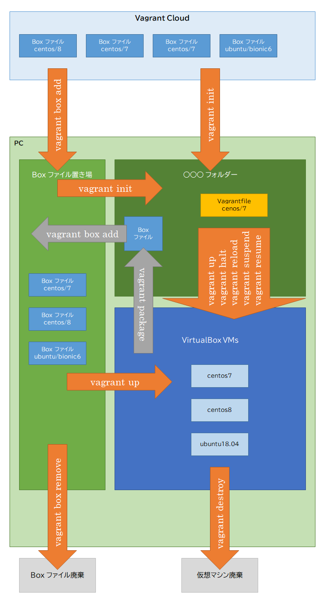

主な Vagrant コマンド¶
コマンドとフォルダ／ファイルの関係図¶
コマンドリスト¶
Box ファイルの操作¶
- vagrant box add
vagrant box add Boxファイル名
vagrant box add Boxファイル名 URL
vagrant box add Boxファイル名 path
Box ファイルをダウンロードする。
ダウンロード先を指定しない場合Vagrant Cloudからダウンロードする。
Vagrant Cloud 以外、例えば GitHub からダウンロードするときはダウンロード先の URL を指定する。
ダウンロード先を path で指定できるときはその path を指定する。
- vagrant box remove
vagrant box remove Boxファイル名
ダウンロードした Box ファイルから指定した Box ファイルを廃棄（削除）する。
- vagrant box list
vagrant box list
ダウンロード済みの Box ファイルを一覧で表示する。
仮想マシンの操作¶
- vagrant init
vagrant init Boxファイル名
指定した Box ファイル用の Vagrantfile が作成される。
- vagrant up
vagrant up
仮想マシンを起動する。
仮想マシンが作成されていないときは仮想マシンの作成 → 起動する。
Box ファイルがダウンロードしていないときはダウンロードする。
サスペンド状態の仮想マシンをリジュームする。
- vagrant halt
vagrant halt
仮想マシンを停止する。
- vagrant reload
vagrant reload
仮想マシンを再起動する。
- vagrant suspend
vagrant suspend
仮想マシンをサスペンドする。
- vagrant resume
vagrant resume
サスペンド状態の仮想マシンをリジュームする。
- vagrant package
vagrant package
仮想マシンから Box ファイルを作成する。
- vagrant destroy
vagrant destroy
仮想マシンを廃棄（削除）する。
- vagrant ssh
vagrant ssh
仮想マシンに ssh 接続する。